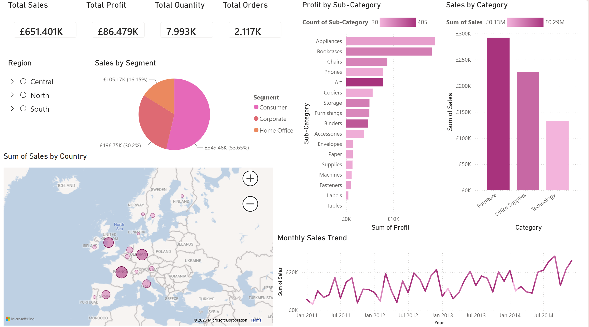

Objective: Analyse sales data using Power BI to identify trends, monitor key performance indicators and communicate insights through interactive visualisations.
As part of my Level 3 Data Technician training, I used Microsoft Power BI to analyse sales data and develop an interactive dashboard to explore business performance.
The dashboard brings together key performance indicators, charts, geographical analysis and trend visualisations to provide an overview of sales and profitability.
Through this project, I developed practical skills in analysing data, creating interactive dashboards and communicating business insights using Power BI.
I applied Power BI to a sales dataset to create an interactive dashboard that brings together key sales, profit and performance measures.
I created an interactive Power BI dashboard to analyse sales performance across different categories, sub-categories, customer segments, countries and time periods.

The dashboard provides an overview of total sales, total profit, quantity and orders. It also explores profit by sub-category, sales by category, customer segments, geographical sales performance and monthly sales trends.
The Power BI dashboard highlights several patterns within the sales dataset.
The dashboard reports total sales of approximately £651K and total profit of approximately £86K, providing a high-level view of overall business performance.
Consumer customers represent the largest segment, accounting for approximately 54% of sales, followed by Corporate and Home Office customers.
Furniture generates the highest sales among the three main categories, followed by Office Supplies and Technology.
The monthly sales trend shows fluctuations over time while also indicating an overall increase towards the later periods shown in the dashboard.
This project strengthened my ability to transform raw data into an interactive dashboard using Microsoft Power BI. I developed experience selecting appropriate visualisations and presenting key performance measures in a clear format.
I also developed my understanding of how dashboards can be used to explore different dimensions of a dataset, identify patterns and communicate insights that can support data-driven decision-making.